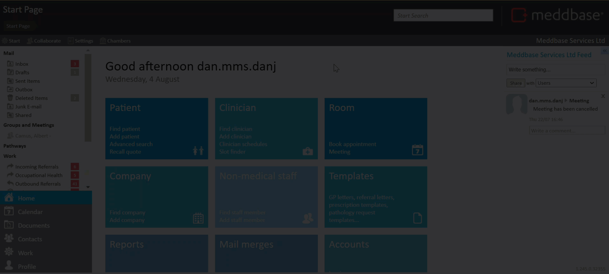
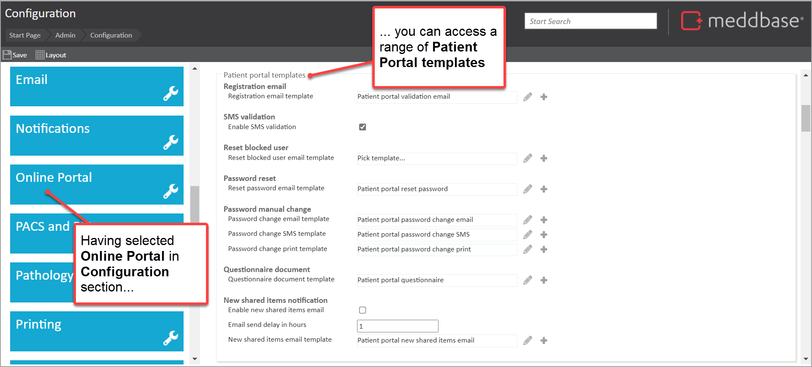
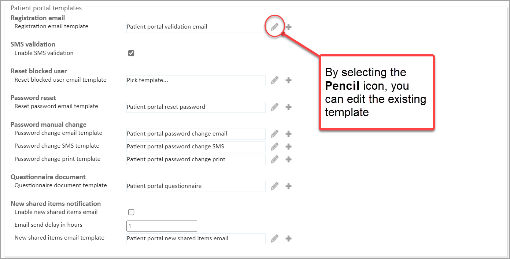
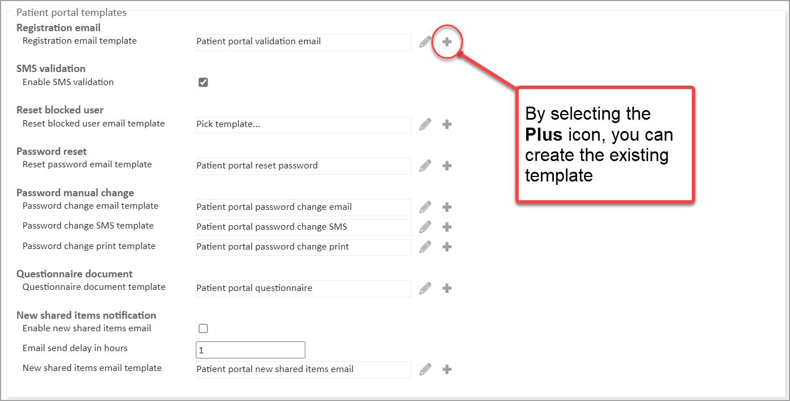

The Meddbase Patient Portal allows patients to go online to make appointment bookings, complete questionnaires, view documents, pay invoices and update their details amongst other things.
This article guides the Meddbase superuser through key setup and configuration activities for the Patient Portal.
Once you have the service added, setting up the Patient Portal consists of the following main steps.
The patient will require a new online Charge Band, reflecting the appointments/services that they can book online.
Click here and follow the step-by-step guide to setting up online Charge Bands.
When enabled, you can configure the Patient Portal settings in Admin > Configuration > Online portal.
From the Patient Portal Settings, you can do the following:
It is recommended to limit the allowed country codes to ones that will be used by registering patients.
When enabling online access for a Charge Band you have the option to notify all the patients on that Charge Band that they now have access to the Patient Portal (as demonstrated in Creating an Online Charge Band).
In the situation where:-
The Reset Portal Login feature enables you to send the patient a link guiding them to the Patient Portal and allowing them to change their password and access it.
Password reset links expire in 15 minutes.
By default, the clinicians' schedules do not allow bookings via the Patient Portal. Note: The clinician record will need to be assigned to a user account so the slots appear. Online bookings can be enabled on a per-session basis via the Site Scheduler on the clinician's record. To do this:

If you wish to repeat this availability on a weekly basis you can use the Copy Week option which will copy this schedule into the next one, two, three or four weeks.
All notifications sent to a patient regarding the Patient Portal are generated using templates. To find the templates:
The range of templates for the portal are shown in the section Patient Portal templates.

These templates are pre-populated with default text relating to the type of notification being sent.
By clicking on the Pencil icon on the row for a template you can customise each template with custom greetings, company-specific themes, logos, etc.

By clicking on the Plus icon you can create a new template of your choice. The same template codes apply when editing any other template within the Meddbase system.

Below are some key points to note about editing and creating notification templates for the Patient Portal.
| No | Key Point |
| 1. | When editing or creating a new email template which includes links to the Patient Portal, the URL code (link) should be within the body of the template. All links should be buffered with the supporting template code {BeginLink}LINK{EndLink}. |
| 2. | As of 4 August 2021, SMS Templates have a character limit of 150 characters per 1 message. This will include any information pulled from the template code. Example: {Patient.FullName} is 18 characters long, 'Joe Bloggs' is 10 characters long, this will use up 10 characters not 18. However, SMS functionality is scheduled to change as described in this article here. |
| 3. | Registration confirmation email links expire in 30 days. |
| 4. | Information about using template codes in templates is in the series of articles listed in the Template Codes section of this help site. |
The Patient Portal provides functionality to enable patients to fill in questionnaires online prior to their appointment. To add pre-configured questionnaires to your appointment types:
The pre-appointment questionnaire is added to the Appointment type.
If you do not have any questionnaires or would like to add or amend current questionnaires you will need to raise a ticket with our Support Team.